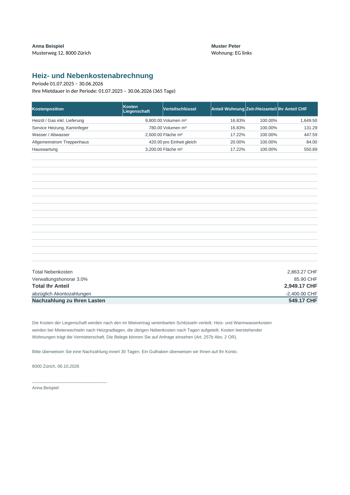
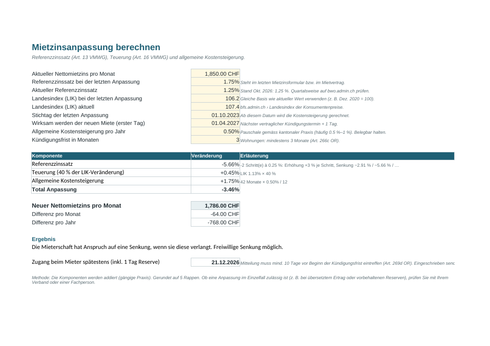

Nebenkostenabrechnung in 30 Minuten statt an einem ganzen Wochenende.
Das Excel-Toolkit für private Vermieterinnen und Vermieter in der Schweiz – mit Heizgradtag-Verteilung bei Mieterwechsel, automatischem Leerstandsanteil und Mietzinsrechner nach Referenzzinssatz.
Toolkit kaufen – CHF 39 Einmalig · Sofort-Download · Excel, LibreOffice, Numbers · keine MakrosWas drin ist
Nebenkostenabrechnung
Bis 12 Wohnungen, 30 Mietverhältnisse, 20 Kostenpositionen. Schlüssel nach m², Zimmer, Wertquote, Volumen oder pro Einheit. Druckfertige Abrechnung pro Mieter.
Mieterwechsel korrekt
Heizkosten nach Heizgradtagen, übrige Kosten nach Tagen. Wer im Juli auszieht, zahlt weniger Heizung als wer im Januar auszieht – wie es die Praxis verlangt.
Leerstand & Kontrollsumme
Kosten leerer Wohnungen bleiben beim Vermieter und werden separat ausgewiesen. Kontrollsumme stellt sicher, dass kein Franken verloren geht.
Mietzinsrechner
Referenzzinssatz (+3 % / −2.91 % je Schritt), 40 % Teuerung, Kostensteigerung – plus spätester Zustelltermin für die Mitteilung.
Checkliste Mieterwechsel
21 Schritte von der Kündigung bis zur Depotfreigabe, Termine rechnen sich ab Auszugsdatum, Überfälliges wird rot.
Abnahmeprotokoll
Raum für Raum, Schlüssel, Zählerstände, Unterschriften – mit Rechner für die Altersentwertung nach Lebensdauertabelle.
So sieht es aus


Vergleich
| Vermieter-Toolkit | PDF-Formular | Profi-Excel | Verwaltungssoftware | |
|---|---|---|---|---|
| Preis | CHF 39 einmalig | ca. CHF 5 | ca. CHF 150 | monatliches Abo |
| Rechnet automatisch | ✓ | – | ✓ | ✓ |
| Heizgradtage bei Mieterwechsel | ✓ | – | teilweise | ✓ |
| Mietzinsrechner & Checklisten | ✓ | – | – | teilweise |
| Daten bleiben bei Ihnen | ✓ | ✓ | ✓ | – |
Fragen
Für wen ist das Toolkit gedacht?
Für Privatpersonen mit einem Mehrfamilienhaus oder einzelnen vermieteten Wohnungen (1–12 Einheiten), die ihre Abrechnung selbst machen.
Ist das rechtlich geprüft?
Das Toolkit setzt gängige Schweizer Praxis um (OR, VMWG) und verweist auf die einschlägigen Artikel. Es ist ein Rechenhilfsmittel und ersetzt keine Rechtsberatung. Mietzinserhöhungen brauchen weiterhin das amtliche Formular Ihres Kantons.
Welche Software brauche ich?
Excel (Windows/Mac, ab 2016), LibreOffice oder Apple Numbers. Keine Makros, keine Installation.
Was, wenn es für mich nicht passt?
Schreiben Sie innert 14 Tagen – Sie erhalten den Kaufpreis zurück, ohne Begründung.